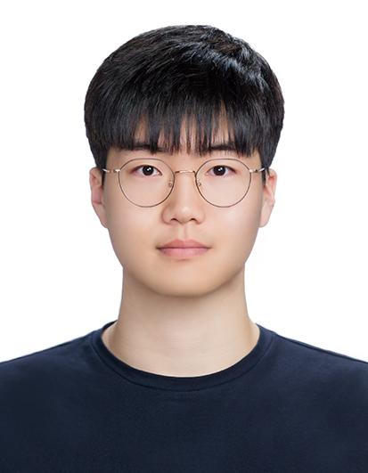

Brian Junekyu Lee
Hello, my name is Brian Junekyu Lee! I am a PhD student in Georgia Institute of Technology.
I am currently interested in Systems Security, Hardware Security, and other related areas.
I am a hard-working student eager to learn anything about security, and to participate in researches, projects, or CTFs as well.
Contact
hibrian827@gatech.edu
Education
Ph.D. - GaTech(Georgia Institute of Technology) : Cybersecurity
B.S. - SNU(Seoul National University) : Electric and Computer Engineering

Research Experience
SOR(Security Optimization Research) Lab
Lab Internship in AI team
Publications
DeepAVR: Deep Multi-Agent Analysis for Automated Vulnerability Repair
Under review by a top-tier Security conference
Patch Code Generation for vulnerable code using LLM
Graduate Thesis
Projects
Awards & Honor
Top 5 Team & Top 20 Individual in WHS (White Hat School)
Sep 2024
Silver Award in Regional KOI & Encouragement Award in National KOI
Aug 2018